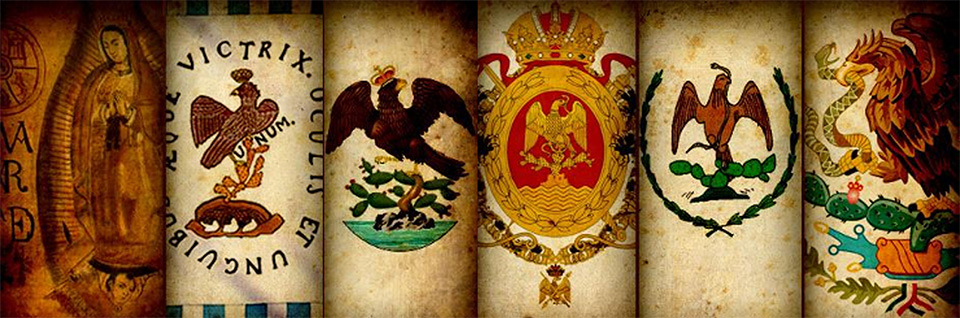

La verdad es que esta ultima es la que menos ago ya que esta solo lo ago con algun tema que me gusta pero no se mucho, como en el caso que me empeso a gustar la historia de Mexico yo investigue y descubri varias cosas, pero nada mas ago eso cuando ya me aburri de todo
